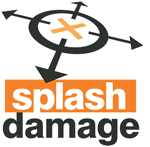
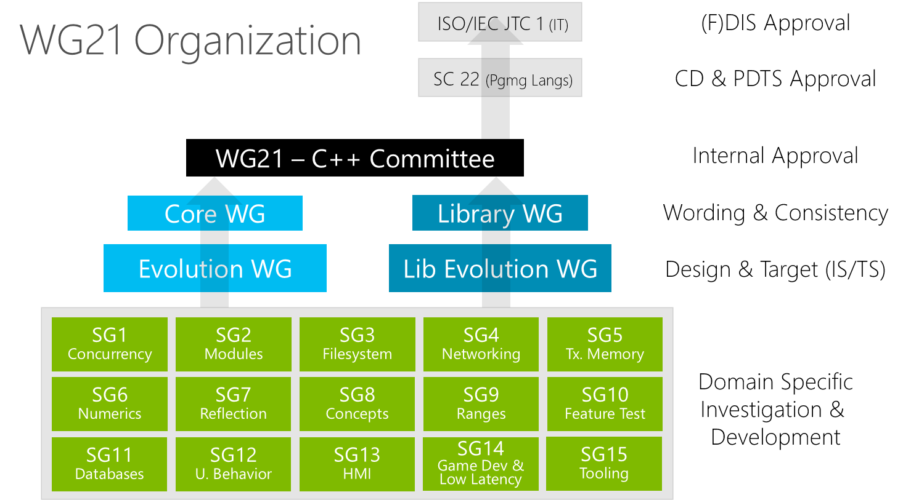
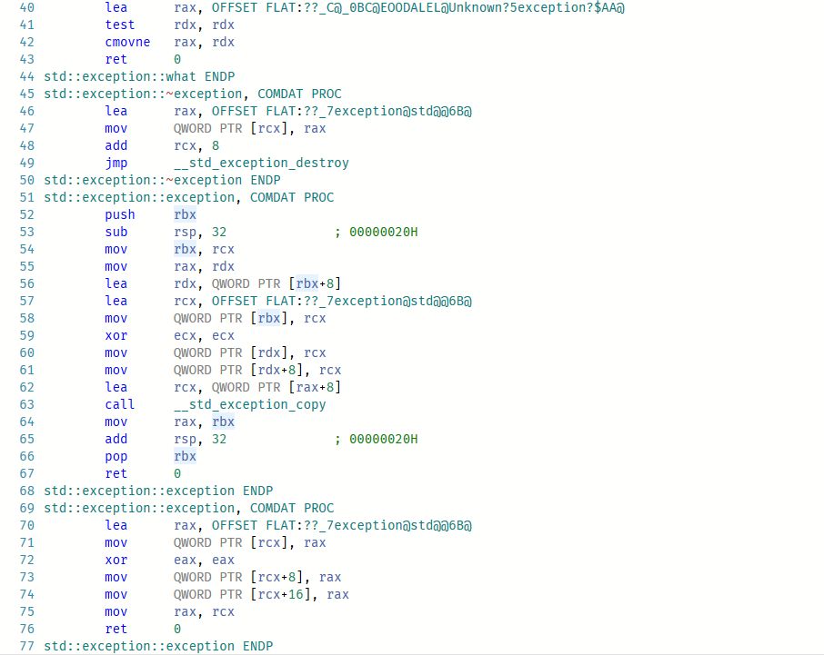
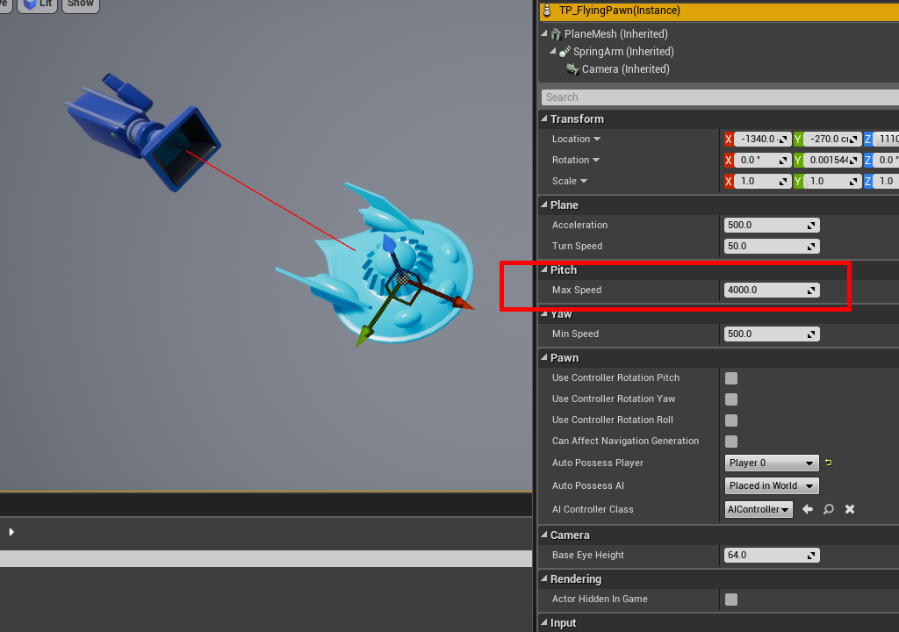
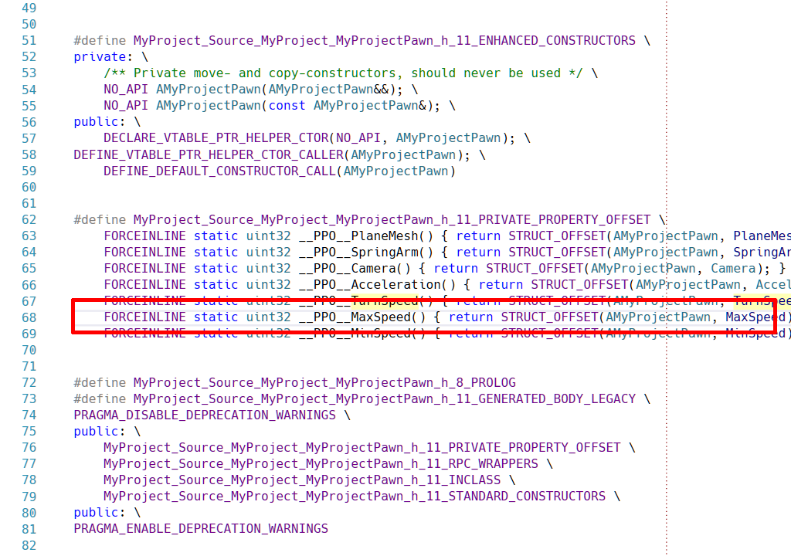

#include <stdexcept>
int func()
{
throw std::exception();
}The Badlands of C++
Professional Game Development
Who Am I

More than 10 years in mobile, indie and AAA games
Now at  in London, UK
Disclaimer
This is a shorter version of a longer (older) talk
Agenda
Preview of longer talk
STL
Boost
Exceptions
Reflection
Recap: The Industry, Platform, Compilation, Coding Style, Techniques
Previously on "Badlands"…
 types of games: AAA, indie, mobile
types of games: AAA, indie, mobile how the industry (mainly AAA) is structured and generally secretive it is
how the industry (mainly AAA) is structured and generally secretive it is games requirements: low latency and high throughput
games requirements: low latency and high throughput
Previously on "Badlands"…
compilers and IDE’s: primarily Windows and Visual Studio
flavours of C++ and coding style
OOP and alternatives
STL
Adoption is very divided…
(Speculative and Unfounded Personal Theory)
Western World
Lower adoption
focus on getting things done
entrepreneurial
Eastern World
Higher adoption
academic / mathematical
background
Reasons for low adoption…
iostreamsare the devil’s work!associated/perceived bloat and slow compilation
still true: https://goo.gl/Tzqwye
slow or cumbersome debugging
not everyone is willing to follow STL coding style and naming
gamedev specific allocation needs
limited allocator model pre C++17
It’s not always a binary choice…
the STL atomics and locks are generally used as is
the
Iteratorconcept is copied and re-implementedif nothing else just to enable
ranged-for's
sparing use of algorithms
Unreal Engine mirrors them for their containers
Case study: std::string…
specific localization needs
very tight coupling with game data
previous STL implementations made awkward choices
for ex: copy on write on older GCC
no control over Small Buffer Optimisation
no need for streams
C
printfstyle preferredI/O handled in bulk elsewhere
[EA]STL
EASTL from Electronic Arts - video game specific implementation of STL
Originally started 10 years ago for internal use, now open source:
https://github.com/electronicarts/EASTL
Normally follows the std:: nomenclature and style
Differences / Changes…
written in a more straightforward/direct way (less general)
easier to debug, faster release builds
simplified allocator model - games specific
alignment aware, naming support, etc
intrusive containers
Differences / Changes (continued)
fixed containers
no allocation, only within provided block
new containers
ring_buffer,heap,priority_queue, etc
smart pointers, type traits
now obsolete
STLport
Quick shoutout to
http://stlport.sourceforge.net/Home.shtml
Multiplatform implementation with some extensions. Abandoned since 2010
Features…
more advanced debug mode
hash tables, singly-linked list, rope
better
std::allocatorused in embedded / limited environments
still available today in Android NDK
WG21

WG21/SG14
Video games and embedded programming study sub-group
Tries to propose new, optimized containers, data structures and even language changes
Proposals and discussion
https://groups.google.com/a/isocpp.org/group/sg14/
Current topics…
fixed point numeric library
view-only alternative to
std::functionfunction_ref
highly specialized multithreaded utilities
RCU and hazard pointers
Current topics (continued)
likely/unlikelyoptimization hintsgot voted in for C++20
alternatives to error handling
status_codeanderror_code
bike shedding :)
Boost
Very frowned upon and highly discouraged…

Reasons…
(again my theory) clash of cultures:
Boost is "academic" and research driven
game dev is pragmatic and get-it-done
historically didn’t play well with MSVC
still doesn’t:
boost::hana(but getting very close)
Reasons (continued)
by now best libraries made it into the standard
thread,mutex,unique_lock,chrono,filesystemetc
difficulty to integrate & setup
bcptool makes this easier
slow compilation times
Exceptions
Almost never used due to speed penalties of throw-ing and catch-ing
A small (not totally fair) demonstration…
Compiled with /O2 optimizations on VS 2017
Let’s see disassembly: https://godbolt.org/g/wQXmTi


Handling of errors…
during dev: hard exit is requested on error
C style last-error or status arguments
impossible to handle errors in constructors
solution is to have
Create,Instantiate,Beginreplacements
Handling of errors (continued)
exceptions are still used in non critical code
online services
OS/system interactions
reputation problem feedback loop
past gen console platforms didn’t support them
compiler support was lackluster
dev didn’t use them
Reflection / RTTI
Default introspection (typeid, dynamic_cast) is inadequate for the needs of games…
close live-link with editors and tools
values inspection and edit
code "hot reload"
serialization for loading/saving; versioning
network replication, RPC’s
garbage collection
Custom solutions…
preprocessor based decorations that both annotate code and generate registration calls
template metaprogramming for same purpose
mini Domain Specific Languages that generate additional
.cpp/.hfilesprocessing intermediate compiler data
ex:
.PDBfile for MSVC
actually modifying the compiler, if access to it
Reflection - UE4

Class member decorations…

The ugly insides…

The End
 @valentin_galea
@valentin_galea

Attribution
Made with asciidoctor-reveal.js
"Boost" cover image (CC BY-SA 4.0) from original
{kind=link}
"Exceptions" cover image (CC BY-SA 2.0) from original
{kind=link}
All other images taken personally in Tenerife, Spain; Released into public domain
1
The Badlands of C++Professional Game Development